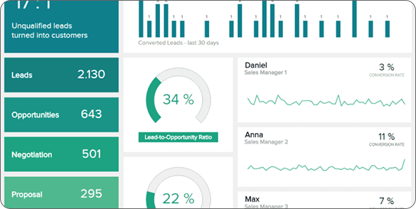
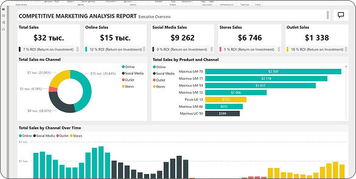

Внедрение
бизнес-аналитики (BI)
Помогаем бизнесу навести порядок в данных и принимать управленческие решения на основе цифр. Агрегируем данные из разрозненных информационных систем в единую базу данных и визуализируем показатели бизнеса с помощью дашбордов. Помогаем перейти на отечественные и open-source решения для бизнес-аналитики.
45 минутная консультация по выбору BI-системы и построению аналитического хранилища
БЕСПЛАТНО
Поддержка существующей BI аналитики
от 80 000 ₽
Пилотный проект
от 3 месяцев и 600 000 ₽

Чем BI-аналитика полезна бизнесу
BI-аналитика позволяет агрегировать в одном месте метрики различных бизнес-процессов и наглядно показывать зависимости между различными показателями компании. Системы аналитики помогают руководителям увидеть полную картину состояния бизнеса, скрытую за огромными массивами данных в Excel.
Анализ
основных показателей предприятия

 Объём дебиторской задолженности, основные показатели:
Объём дебиторской задолженности, основные показатели:- ▶ Средняя задолженность
- ▶ Прирост и погашение дебиторской задолженности
- ▶ Оборачиваемость задолженности
- ▶ Рейтинги клиентов, суб-дистрибьюторов, менеджеров, ЦФО по уровню дебиторской задолженности
- ▶ Взаиморасчеты, план погашения задолженности и просрочки
Структура дебиторской задолженности- ▶ Корзины сравнения дебиторской задолженности и их динамика
- ▶ Сравнительный анализ дебиторской задолженности всех показателей в различных разрезах
- ▶ Анализ платежей и профилей клиентов и подрядчиков во всех срезах и в динамике, оперативная оценка надежности контрагентов
Анализ
кредиторской задолженности
 Объём кредиторской задолженности, основные показатели:
Объём кредиторской задолженности, основные показатели:- ▶ Средняя задолженность
- ▶ Прирост и погашение кредиторской задолженности
- ▶ Оборачиваемость задолженности
- ▶ Рейтинг поставщиков, подразделений, менеджеров, ЦФО по уровню задолженности
- ▶ Анализ просрочки: по причинам возникновения и по длительности, динамика задолженности и просрочки
Структура кредиторской задолженности- ▶ Каждому сегменту кредиторской задолженности — своя аналитика
- ▶ Оперативный анализ задолженности по поставщикам, подразделениям, договорам, срокам возникновения
- ▶ Анализ кредиторской задолженности в разрезе сегментов: новые поставщики, постоянные, проблемные, с длительной просрочкой, с частыми изменениями контактных данных
Аналитика
продаж
 Метрики работы отдела продаж
Метрики работы отдела продаж- ▶ Анализ платежей и профилей клиентов и подрядчиков во всех срезах и в динамике, оперативная оценка надежности контрагентов
- ▶ Показатели продаж: средний чек, LTV, цикл сделки
- ▶ Выполнение плана и прогнозирование продаж
Анализ рынка- ▶ Построение рейтингов по группам товаров, торговым представителям, работа с бостонской матрицей и мекко-анализом, работа с план-факт показателями продаж, построение прогнозов, отчетность на основе предыдущих периодов, отклонения
RFM и FMR анализ- ▶ По товарам и группам, магазинам/торговым объектам, работа с бостонской матрицей, мекко-анализом, выведение и анализ трендов
Примеры реализованных дашбордов
1
Показатели страховой компании
В режиме реального времени показывает основные метрики компании: отчеты в разрезе по продуктам для физических и юридических лиц, количеству заключенных договоров с разбивкой по филиалам и выплаты клиентам

2
Финансовые показатели производственной компании
Отчет показывает динамику выручки и денежного потока в разрезах по направлениям деятельности, сводку по активам и пассивам компании.

3
Финансовые показатели производственной компании
Отчет показывает динамику выручки и денежного потока в разрезах по направлениям деятельности, сводку по активам и пассивам компании.

Помогаем компаниям внедрить бизнес-аналитику с нуля
1.
Подбираем BI-систему под Заказчика
Изучаем потребности бизнеса и данные из существующих информационных систем. Подбираем недорогие комплексные решения для BI, которые отвечают требованиям заказчика. Работаем со всеми популярными BI-системами.
2.
Создаем единую аналитическую базу данных
Агрегируем данные из любых разрозненных ИТ-систем (ERP, CRM, MRP, SCM, WMS, WEB) в единую аналитическую базу данных.

3.
Закупаем лицензии и внедряем BI-систему
Являемся партнерами отечественных вендоров BI-решений, что позволяет нам давать нашим клиентам лучшие условия на приобретение лицензий.
4.
Настраиваем дашборды для оперативного управления компанией
Бизнес-аналитики meteorIT вместе с Заказчиком определяют ключевые показатели и построят наглядные визуализации для принятия оперативных и стратегических решений.
5.
Берем полученную BI-систему на поддержку или обучаем команду Заказчика
Готовы обучить команду Заказчика работе с BI‑системой и аналитическим хранилищем, чтобы клиент мог развивать новое направление без нашей помощи.
Какие задачи meteorIT помогает решать своим клиентам
Внедрение BI-систем
Подберем, внедрим, настроим и обучим пользоваться BI-системой, которая лучше всего подойдет под требования компании-заказчика.
от 3 месяцев и 600 000 ₽
Импортозамещение существующей BI-системы
Подберем отечественный аналог зарубежной BI-системе, перенесем данные из старой DWH и создадим отчеты на новой BI-платформе.
от 3 месяцев и 600 000 ₽
Автоматизация отчетности
Разрабатываем автоматизированные отчеты, которые экономят время сотрудников и минимизируют ошибки.
от 2 месяцев и 400 000 ₽
Сравнение 5 наиболее популярных BI-систем
Аналитики meteorIT изучили наиболее популярные на рынке решения, нашли сильные и слабые стороны каждой BI-системы. Документ сэкономит время на поиск решений и их оценку, поможет сделать оптимальный выбор для вашего проекта.

Обучение BI-команде
Проводим обучение сотрудников работе с BI-системами и аналитическими инструментами.
от 1 месяца и 120 000 ₽
Построение аналитического хранилища (DWH)
Соберем, структурируем и организуем хранение данных из различных ИТ-систем компании на отечественных или open-source решениях.
Индивидуально — сроки и стоимость зависят от проекта
Консультация по внедрению
BI-аналитики
Часовая консультация по запуску BI-аналитики в вашей компании.
Изучим требования вашего бизнеса, текущую ситуацию с хранением и организацией данных. Предложим оптимальный набор BI-решений для вашего проекта.
Изучим требования вашего бизнеса, текущую ситуацию с хранением и организацией данных. Предложим оптимальный набор BI-решений для вашего проекта.